| 日付 | 2008年6月14日（土） |
|---|---|
| 山域 | 西上州 |
| メンバー | 単独 |
| 山行形態 | 日帰り |
| アクセス | 電車、バス |
| ルート (Map) | 栗生→不動の滝→御座山→白岩 |
御座山は西上州の西方にある佐久地方の名峰で、この山域の最高峰だ。
昨年末に天狗山・男山に登ったときに、御座山と八ヶ岳の展望を楽しみにしていたが、
天気が悪くて結局見れなかった。
佐久の山に来るのは、それ以来なので半年振り。
今度こそ晴天を期待して、憧れの御座山に向かう。
9:19 小海駅到着。
電車に乗っている登山者は多かったが、途中の駅で次々と降りていき、
この駅で降りたのは2、3グループだけだった。
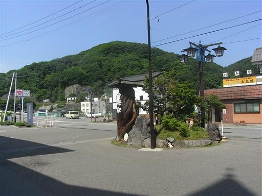
小海駅で降りた人達は皆、八ヶ岳方面に向かったようで、
一人バスに乗って御座山をめざす。
バスの運転手によると、今年はこれまで10人程度の登山客を乗せたそうだ…
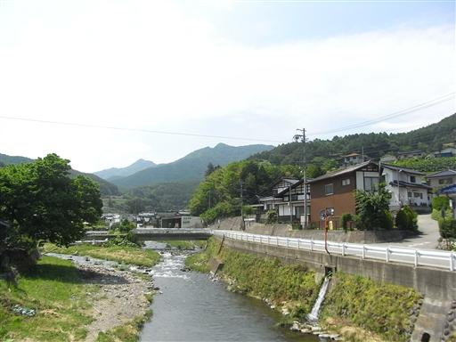
10:24 栗生バス停到着。標高1240m。
この辺りは全体的に標高が高いので、山頂との標高差はそれほどない。
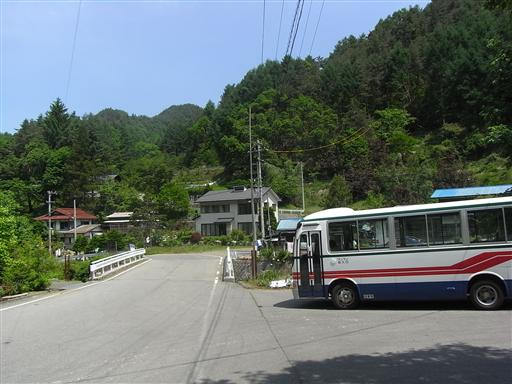
車道を歩いて登山道入口をめざす。
今日は快晴。絶好の展望が期待できそう。
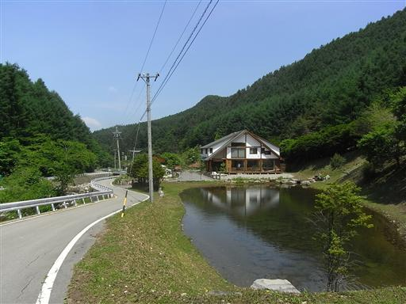
舗装路を外れて砂利道に入っていく。
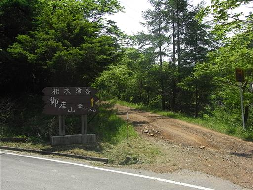
道の両脇はカラマツ林がどこまでも続く。
虫の声が非常にうるさい。ここはもうすでに完全に夏だ。
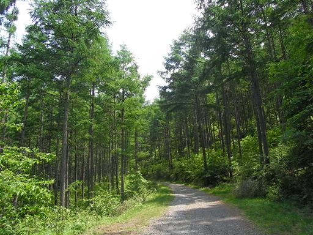
岩から枝が一本飛び出して、先っぽにツツジの花を咲かせている。

林道終点に到着。何台かの車がすでに停まっている。
アクセスが極めて不便なこの山には、車で来る人が多いようだ。
車のナンバーは群馬と長野が多い。
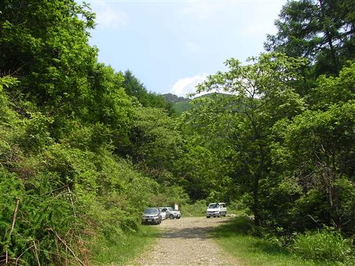
案内板には日本200名山と記述されている。
200名山には良い山が多いと聞いたことがある。
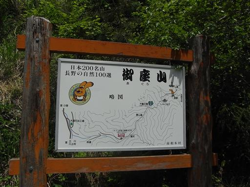
登山道に入っていく。草木が生い茂って、緑一色だ。
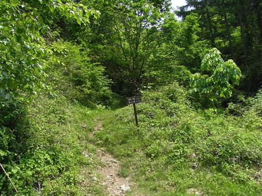
沢沿いを登っていく。登山道はそれなりに整備されている。
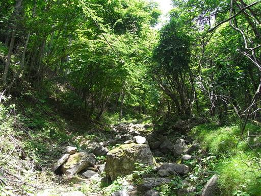
尾根筋に岩盤が露出しているところが見える。
この山はなかなかの岩山だ。
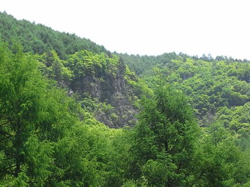
不動の滝に到着。岩の上をチョロチョロと水が流れている。
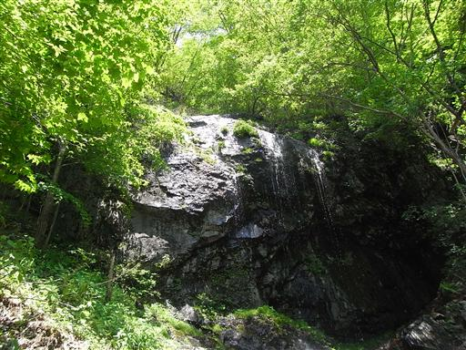
大きなマツボックリを発見。普通のマツボックリよりも細長い。
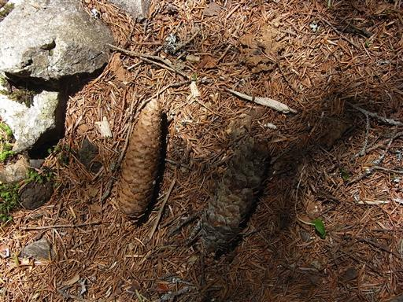
山頂に近づいてくると、斜面に岩盤があらわれてくる。
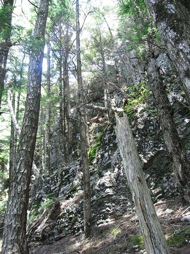
それに伴い、登山道もクサリ付きの急な斜面になる。
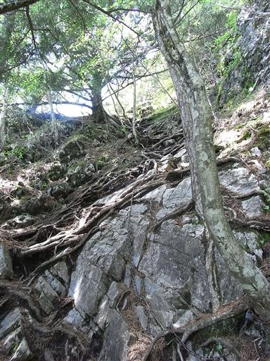
岩場の上に出ると展望が大きく開ける。
奥秩父主脈の金峰山、瑞牆山がよく見える。
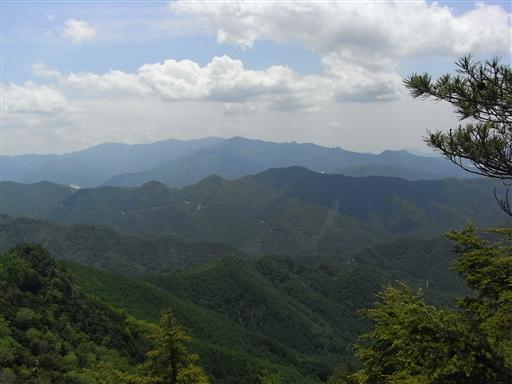
御座山の前衛峰に到着。御岳神社が祀られている。

展望が開け、御座山の大岩壁が目の前にあらわれる。
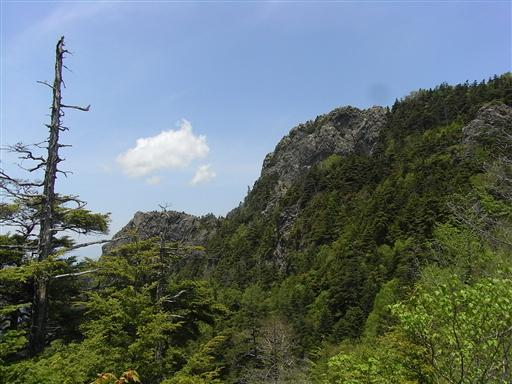
前衛峰と御座山との鞍部に到着。ここから登り返すと御座山だ。
ここからは、北相木村に下る道もある。ここの道もいつか辿ってみたい。
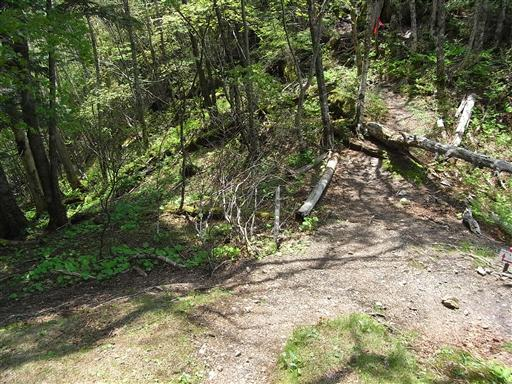
登山道脇にシャクナゲが咲いている。
山でシャクナゲの花に出会うのは初めてだ。
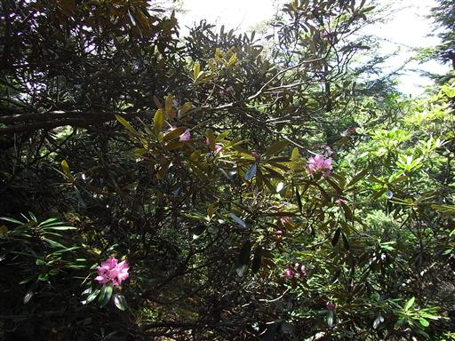
シャクナゲはツツジ科の植物。
よくよく見るとツツジの花とよく似た形をしている。
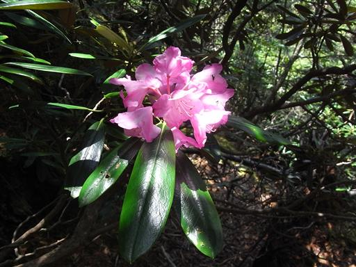
山頂の岩壁直下に到着する。
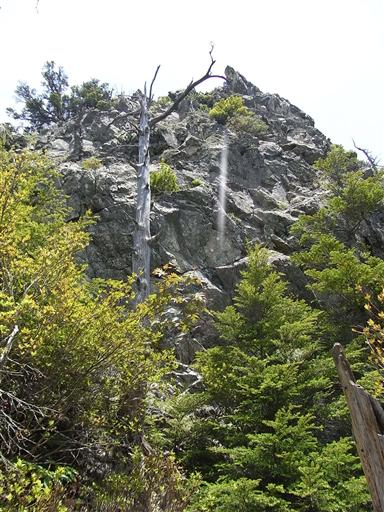
岩の麓にはコイワカガミが大群生している。
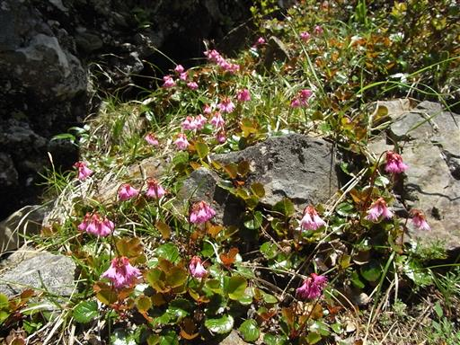
山頂直下には立派な避難小屋が建っている。
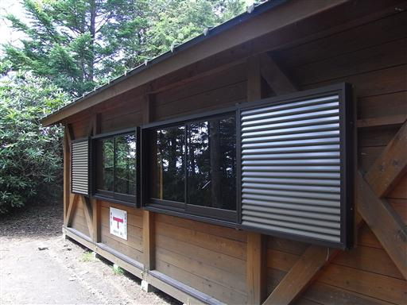
中は非常にきれい。
是非泊まってみたいが、御座山は他の山と登山道が繋がっていないので、
基本は日帰り山行になってしまう。
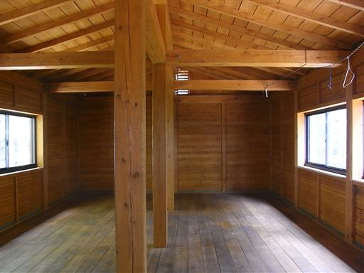
小屋から少し歩くと、すぐに大岩壁の上部に踊り出る。
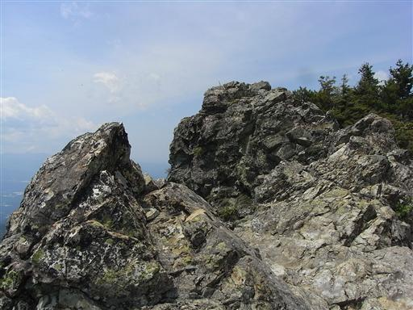
西方には八ヶ岳の山々の連なりが大きく見える。
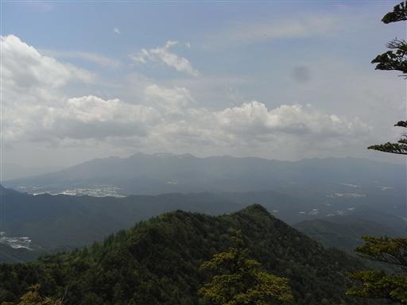
以前登った天狗山（左）と男山（右）が眼下に見えている。
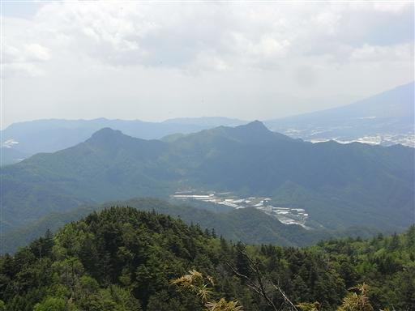
山頂部からは岩場が垂直に切れ落ちていて、非常に高度感がある。
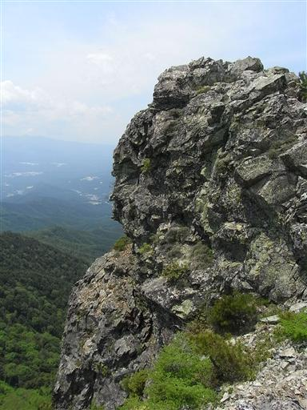
12:24 御座山山頂到着。標高2112m。
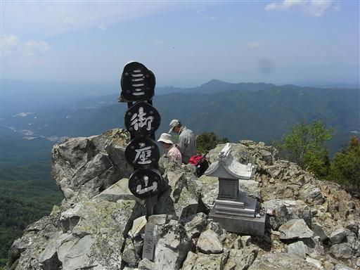
西上州から続くこの山域で御座山より高い山はない。
ここまで展望のよい山に登るのは武奈ヶ岳以来だ。
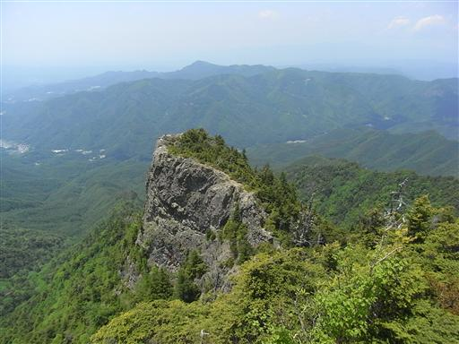
東の方には遠くに両神山が見えている。
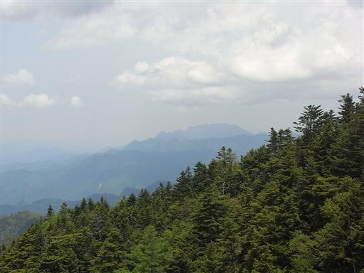
山頂部は細長い岩場になっている。
山頂直下まで針葉樹が生い茂っている。
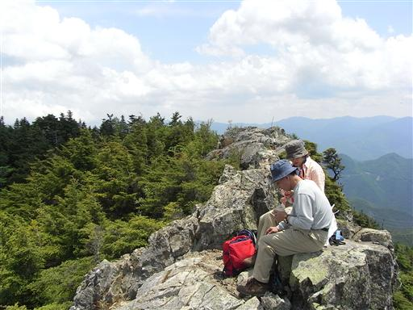
足元を覗き込むと、はるか下方まで垂直の壁が続いている。
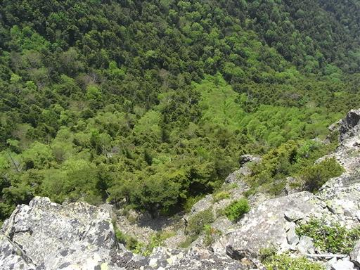
13:45 昼食をとってゆっくり展望を楽しんだ後、下山を開始する。
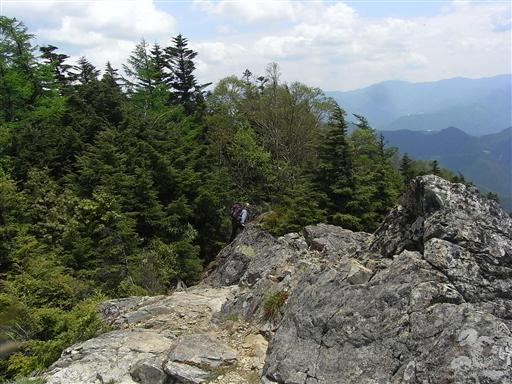
少し下ったところから御座山を見上げる。
御座山の裏側は岩壁が見えず、針葉樹に覆われている。
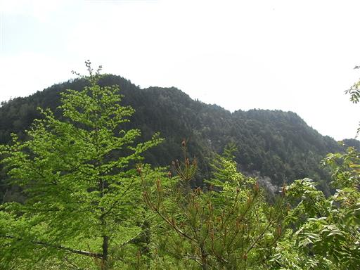
登山道の脇はシャクナゲのジャングル状態。
鬱蒼と生い茂っているが、花を付けている株は非常に少ない。
時期が早すぎたのか、遅すぎたのか、それともこんなものなのか…
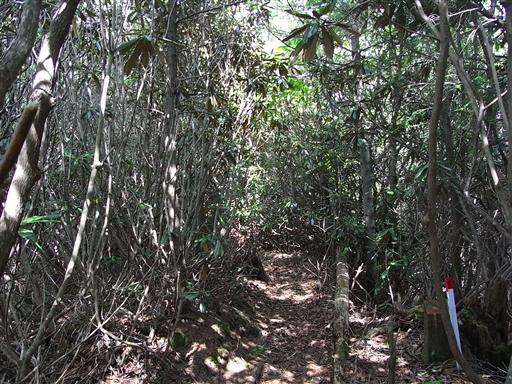
それでも、所々にポツリポツリと花を咲かせている枝がある。
シャクナゲは梅雨の時期に咲くので、展望とシャクナゲを同時に楽しめる機会は貴重だ。
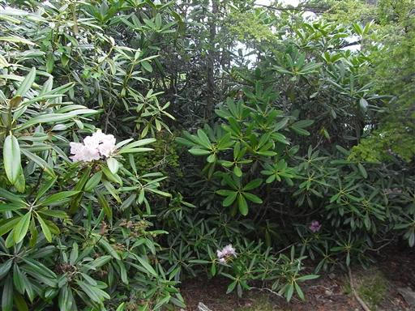
ここに咲いているシャクナゲは登りのときに見た花より色がだいぶ薄い。
種類が違うのだろうか？
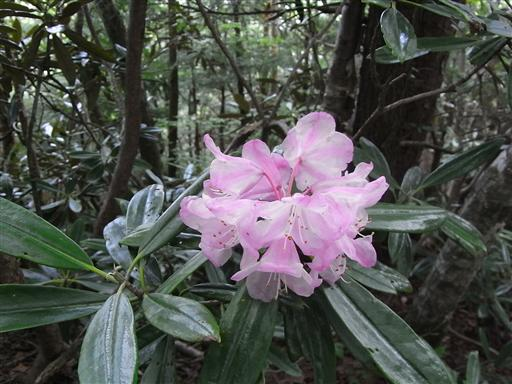
標高を下げていくと、シャクナゲの群落地帯を抜け出し、少し落ち着いた景色になる。
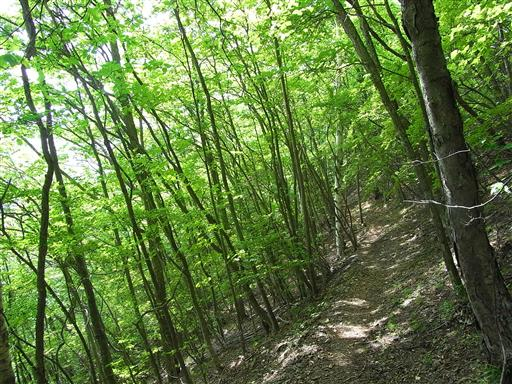
下山。こちら側にも車が停まっている。
マイカー登山者は残念ながらピストン登山しか出来ない。
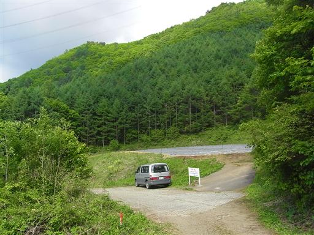
右手には群馬長野県境稜線が見えている。
佐久地方は昔から群馬との結びつきが強く、峠道が何本も越えているが、
稜線上に登山道は一本たりとも無い。
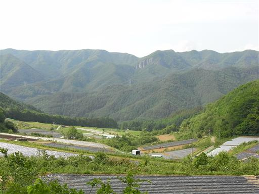
ものすごく不気味なカカシ。
烏はどうか知らないが、人間よけには充分な効果を発揮するだろう…

15:40 長い長い車道を歩いていると、親切な人に車に乗せてもらえた。
路線バスに追いついたところで、礼を言ってバスに乗り換える。
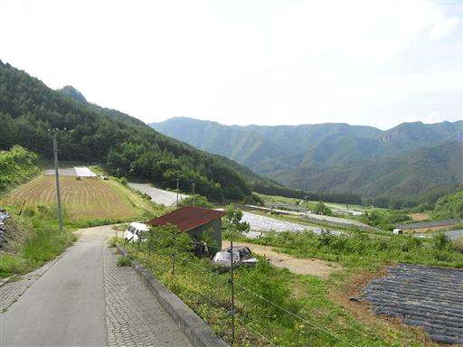
帰りは節約のため、鈍行列車で甲府を経由して帰る。
電車は途中で野辺山駅を通過する。
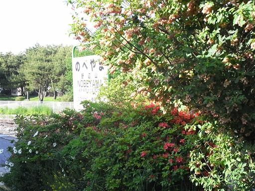
この駅はJRの駅の最高地点(1346m)として名高い。
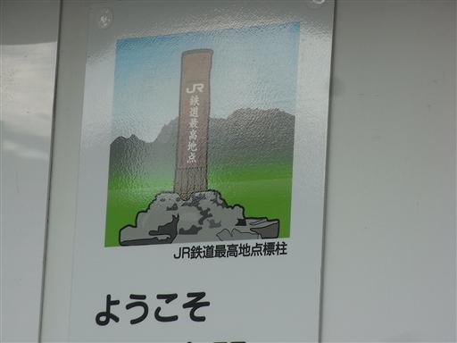